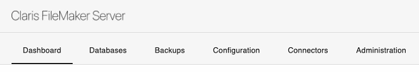
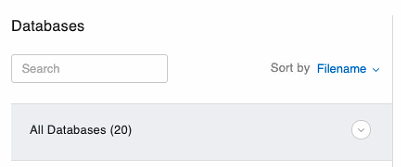
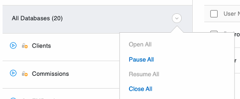

Stopping and Starting Files on FileMaker Server
How to Stop Serving Files
-
Quit FrameReady on all computers.
-
On the server computer, open the FileMaker Server Admin Console.
See: Opening the FileMaker Server Admin Console -
In the nav bar, click Databases.

-
To the right of All Databases, click the dropdown arrow and choose Close All.

-
Select Close All.

-
In the "Close All Databases" dialog, change the delay time to 0 (minutes) and click OK.
The FileMaker Server closes all database files. -
Wait for the blue icon to turn grey; when this happens, the files are no longer being served by FileMaker Server and can be opened locally for changes.
How to Start (or Restart) Serving Files
-
On the server computer open the FileMaker Server Admin Console.
See: Opening the FileMaker Server Admin Console -
In the nav bar, click Databases.
-
To the right of All Databases, click the dropdown arrow and choose Open All.
-
Exit the Server Admin Console.
-
Re-open FrameReady on your guest computers.
© 2023 Adatasol, Inc.